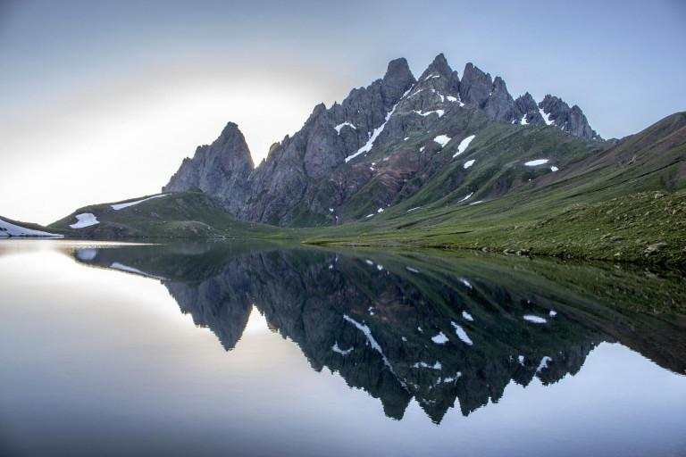
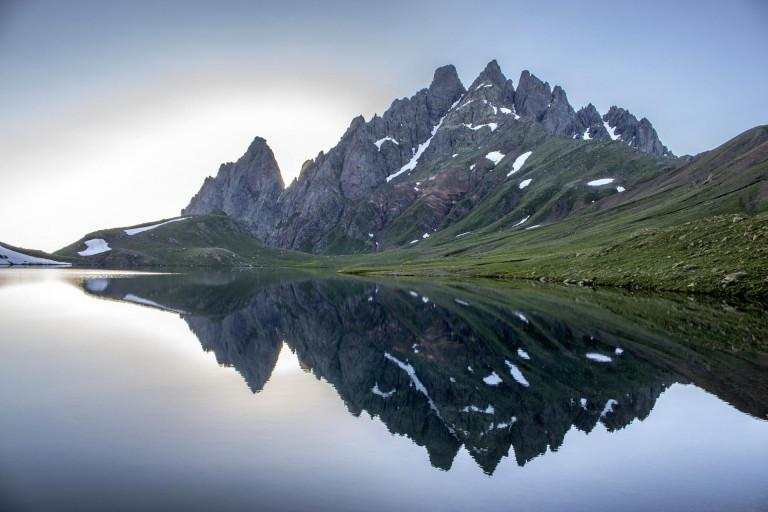
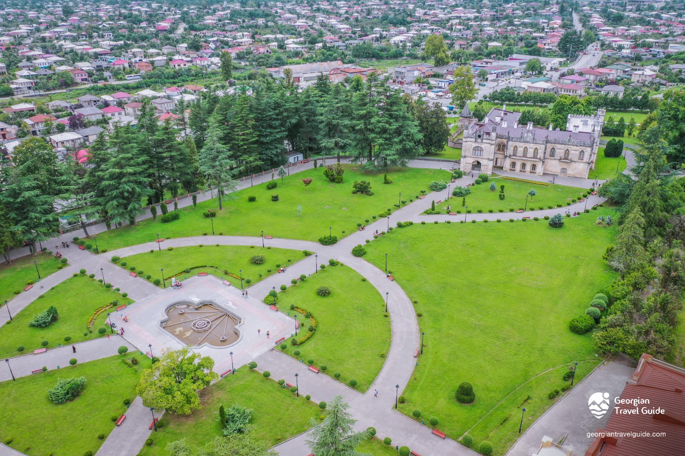
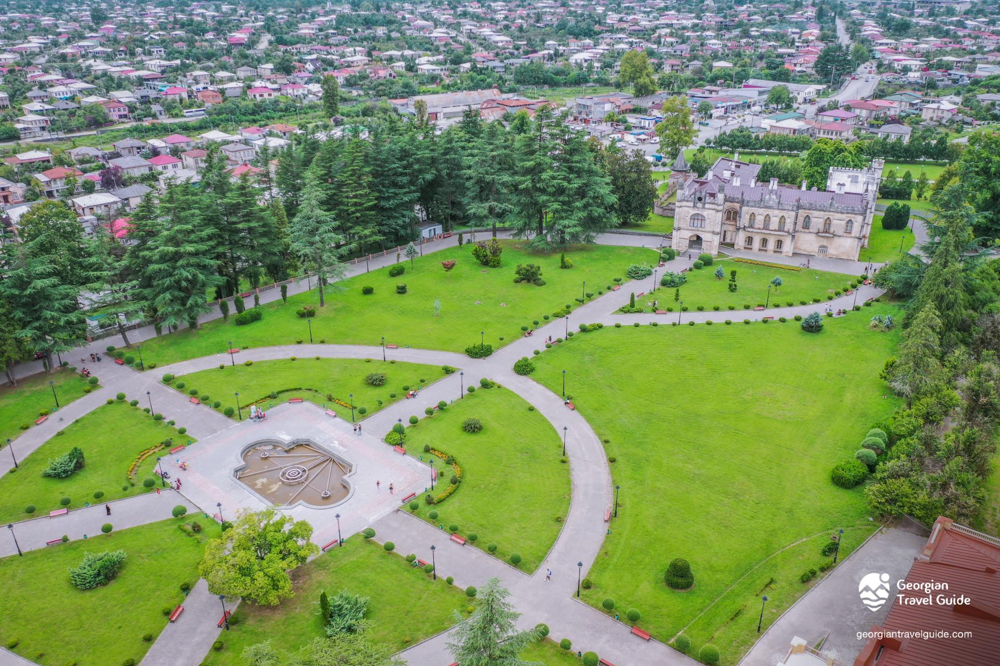

სამეგრელოს შესახებ
სამეგრელო დასავლეთ საქართველოს ისტორიულ-გეოგრაფიული მხარეა, რომელიც მდინარე რიონს, ცხენისწყალს, ენგურსა და შავ ზღვას შორის მოქცეულ ტერიტორიას მოიცავს. მისი ცენტრალური ქალაქია ზუგდიდი. სამეგრელოს რეგიონს მთელი თავისი ისტორიის მანძილზე უდიდესი სტრატეგიული მნიშვნელობა ენიჭებოდა, რის გამოც რომაელების, ბიზანტიელების, მონღოლების, თურქების, სპარსელების, რუსებისა და სხვათა არმიების არაერთი შემოსევის ობიექტი გახდა. ეს მხარე მდიდარია სხვადასხვა ეპოქის კულტურის ძეგლებითა და შთამბეჭდავი ბუნებით, ცისკიდურთან, ჭინკების სამეფოში მოლივლივე ლურჯი ტბებითა თუ ულამაზესი კანიონებით.
 
სამეგრელოს ღირსშესანიშნაობები
ანტიკურ ხანაში სამეგრელო კოლხეთის სამეფოს ნაწილს წარმოადგენდა. კოლხეთი მთლიანად მოიცავდა დღევანდელი დასავლეთ საქართველოს ტერიტორიას. თანამედროვე ეპოქამდე ამ რეგიონს ლაზიკის და ეგრისის სახელწოდებებითაც იცნობდნენ, მისი პოლიტიკური ცენტრი არქეოპოლისი (ან ნოქალაქევი) იყო. სწორედ ნოქალაქევს უკავშირდება არგონავტებისა და ოქროს საწმისის მითი. რომაელებმა ეს მხარე ჩვენს წელთაღრიცხვამდე პირველ საუკუნეში დაიპყრეს და აქ თითქმის 400 წლის განმავლობაში ბატონობდნენ. XI საუკუნეში დასავლეთ და აღმოსავლეთ საქართველო ერთ სამეფოდ გაერთიანდა, რომელმაც XV საუკუნემდე იარსება. XV საუკუნის დასასრულს საქართველო სამ მოქიშპე, დამოუკიდებელ სახელმწიფოდ დაიყო: ქართლი, კახეთი და იმერეთი. შეიქმნა რამოდენიმე სამთავრო, რომელთაგან ერთ-ერთი იყო ოდიში. იგი დღევანდელი სამეგრელოს მთელს ტერიტორიას მოიცავდა. XII საუკუნის შუა წლებიდან მოყოლებული XIX საუკუნემდე ოდიშს დადიანების გვარის წარმომადგენლები მართავდნენ. 1803 წელს ოდიში რუსეთის პროტექტორატად გამოცხადდა. ამ დროისთვის აღმოსავლეთ საქართველო უკვე რუსეთის მმართველობის ქვეშ იყო. 1918 წელს საქართველომ დამოუკიდებლობა გამოაცხადა და სამეგრელო ახალი დემოკრატიული ქვეყნის ნაწილი გახდა. დღეს ისტორიული სამეგრელოს სამთავროს ტერიტორია სამეგრელო–ზემო სვანეთის ადმინისტრაციული რეგიონის შემადგენლობაში შედის.
 

| სამეგრელოს ღირსშესანიშნაობები |
|---|
მეტი სამეგრელოზე
ტურისტული ადგილი: 133
ფართობი, კმ: 4,377
მოსახლეობა: 269,563
კურორტები
ანაკლია
სქური
მენჯი
ლებარდი
მუხური - ლუგელა
მალთაყვა
ცაიში
ჭკადუაში